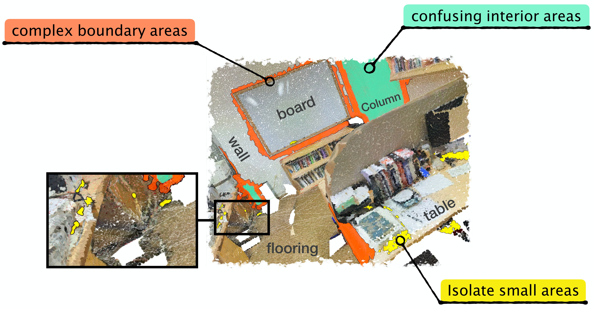
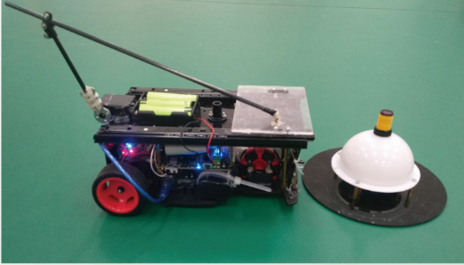
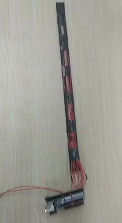

Junhao Zhang张钧皓Ph.D. Student, Show Lab
National University of Singapore |
|


Biography
I am a first year Ph.D. student in the Show Lab at National University of Singapore, working with Prof. Mike Zheng Shou. I spent wonderful time at Meitu MT Lab, Multimedia Lab and Multimedia Research Center as a research intern. I obtained my Bachelor’s Degree of Engineering from Shandong University in June 2020.
My current research interests are efficient backbone architecture and video understanding.
News
- [10/2021] Co-organizing ICCV 2021 Workshop on Share Stories and Lessons Learned.
- [09/2021] I joined National University of Singapore as a Ph.D. student.
- [09/2021] 3 papers to appear at AAAI'21, 1 paper to appear at TIP, 1 paper to appear at WACV'22.
Publications

|
Learning Dynamical Human-Joint Affinity for 3D Pose Estimation in Videos. Junhao Zhang, Yali Wang, Zhipeng Zhou, Tianyu Luan, Zhe Wang, Yu Qiao. IEEE Transactions on Image Processing (TIP). |

|
Learning Geometric Disentangled Representation for Complementary Understanding of 3D Object Pointcloud. Mutian Xu∗, Junhao Zhang∗, Zhipeng Zhou, Mingye Xu, Xiaojuan Qi and Yu Qiao (* equal contrbution) Thirty-Fifth AAAI Conference on Artificial Intelligence (AAAI), 2021. [paper] [code] |

|
PC-HMR: Pose Calibration for Human Mesh Recovery. Tianyu Luan∗, Yali Wang∗, Junhao Zhang∗, Zhe Wang, Zhipeng Zhou and Yu Qiao (* equal contrbution) Thirty-Fifth AAAI Conference on Artificial Intelligence (AAAI), 2021. |
|  | Indistinguishable Points in Semantic Segmentation of 3D Pointcloud. Mingye Xu, Zhipeng Zhou, Junhao Zhang and Yu Qiao Thirty-Fifth AAAI Conference on Artificial Intelligence (AAAI), 2021. |
Other Projects
|  | Automatic driving manipulator fire fighting car. [video demo soon] |
|  | Human Back Posture Electrical Identification System. National Science and Technology Innovation Project for College Students. [video demo soon] |

Junhao Zhang | Last updated: Dec 2020.